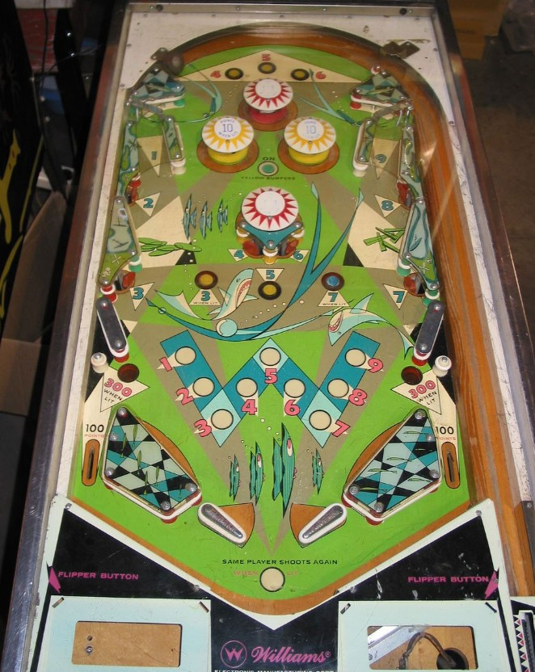

The primary objective is to collect the numbers 1 through 9 around the playfield. 1 and 9 are the upper left and upper right rollunder gates, and 2 and 8 are the middle left and right standup targets. 3 and 7 can be collected at the lower left or right standup targets, or the left or right rollover buttons in the middle of the playfield. 4 and 6 can be collected at the left or right rollover buttons in the top set, or the standup targets attached to the center pop bumper. 5 can be collected at the top center rollover button or the middle playfield center rollover button. Anything that awards a 1-9 number gives 10 points.
A "leg" of the W pattern shown on the playfield is considered complete if you collect all three numbers in any of the following sets: 1-2-3, 3-4-5, 5-6-7, or 7-8-9. Completing any one leg lights the red pop bumpers for 100 points instead of 10, lights the out lanes for 300 points instead of 100, and lights extra ball in the backglass bagatelle game. Yellow pop bumpers score 1 point or 10 when lit, and are lit by pressing the green rollover button between the yellow bumpers themselves. Once a feature is lit, it remains lit for the rest of the ball without exception. Collecting all of 1 through 9 on a single ball scores a Special.
Slingshots score 1 point. There are no gates, center posts, kickbacks, or in lanes. At the end of every ball, on the main playfield, a mini-ball is fired into the bagatelle game on the backglass. When the mini-ball goes through the bagatelle game, an end of ball bonus of 100, 300, 500, 300, or 100 points is scored based on which lane the mini-ball took at the bottom of the board. If at least one leg of the W pattern was completed on the main playfield, making the center 500 lane in the bagatelle awards an extra ball; the phrase "500 Lane Extra Ball" will light to indicate that this chance is ready, whereas "Same Player Shoots Again" is what indicates that the extra ball was actually scored. Tilt ends game, but only for the player who tilted.
The below picture of Pot 'O' Gold's playfield was taken from the Internet Pinball Database, where it was originally provided by Philippe Thibault.
